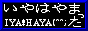

正しいの歩き方
- 本ページ、および、本ページより派生する一連のページは、
筆者「はやまかおる」が個人的道楽によって作成するものです。
したがって、記述内容が保証されるものではありませんし、
それによって生じた損害などについても一切関知いたしません。
ただし記述間違いについては連絡いただければ、なるべく修正いたします、
多分、きっと。
- 本ページでは、スタイルシートを多用しております。
サポートいていないブラウザでは少々地味に見えますが、
文章を読むのには支障ないはずです。
- 本ページでは、GIF 画像を一切用いず、PNG 画像 あるいはJPG 画像のみを使用しております。
- リンクはどこに直接張っていただいても結構です。
ただし、ソフトウェアアーカイブに直接張っていただいても、
バージョンアップと共に、まず切れます。
（∵ファイル名にバージョンナンバが入ってるから）。
- メイルは返事がさせていただくのが、週末になってしまう場合があります。
さらに、うっかり忘れてしまう場合もありますので、
月曜になっても返事が来ない場合は、おそれいりますが、
もう一度メイルください。
また、いわゆる亀レスをする場合がありますが、
その時でも顰蹙を売ってはいけません。
- 「いや！はやまった」および「The IYA! HAYAMATTA」は、
「はやまかおる」の無登録商標です。
(R)や(TM)を付ける必要は一切ありません。
- 本ぺーじは、あちゃいんさん作の
WUU(Webpage Upload Utility)にて維持・管理、
Netscape Communicator 4.61 for OS/2 にて表示を確認しています。
-
旧アドレスの iya-hayamatta@ijk.com も従来通り使用できますが、ijk.com
の方針で第三者中継を許可してしまう設定になっているメールサーバーからのメールを受けとることができません。SPAMメール除けという ijk.com の主旨は分からないでもないのですが、このために、せっかくバグリポートや要望をくださっているユーザの方々にご迷惑をかけてしまっています。したがいまして、以後、iyamatta.hayama@nifty.ne.jp (ZXH02315@nifty.ne.jp) をサポート窓口に変更したいと思います。
ご迷惑をおかけしますが、ご理解ください。